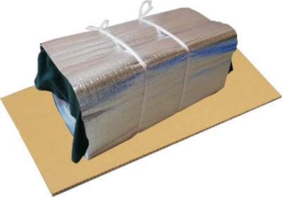
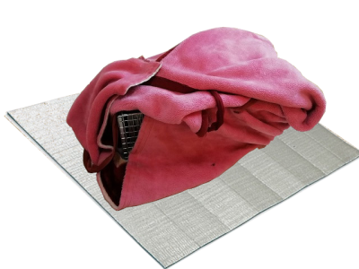
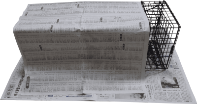
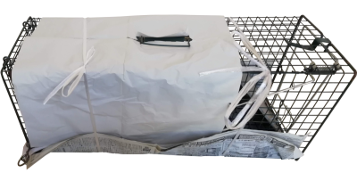

手術のご予約の前の日に猫ちゃんを捕まえる事はあると思います。その際に気を付けてあげなくてはならないのは温度管理です。
夏は暑いので熱中症に注意し、冬は寒いので保温してあげなくてはなりません。
以下、夏と冬で気を付けてあげなければならないポイントを何点か紹介します
※ 本院は前泊預かりできますが、休診日は不可です。営業日をご確認下さい。
手術前日に捕獲し、お家で一晩置いておく場合は、寒くならない工夫をしてあげて下さい。
バスタオル等や毛布などでくるみ、底冷えしないように、捕獲器の下にアルミマットやダンボールを敷いてあげて下さい。


捕獲できたら、雨風を凌ぐために、お家の玄関や、小屋、車庫、車の中などに入れてあげると良いでしょう。
夏は暑いので涼しさ・通気性を優先して下さい。怯える様であればそっと目隠しする程度に被せてあげて下さい。
布や生地だと熱が籠もりそうならば、新聞紙程度で十分です。


梱包も簡単で涼しげに
エアコンの効いた室内が理想的ですが、室内に待機させれないならば日陰で風通しの良い環境にして下さい。
ハアハアしていたら熱中症の可能性があります。エアコンの効いた室内で扇風機と組み合わせて涼しくしてあげて下さい。長時間の風の当て過ぎに注意。
保冷剤も有効ですが、種類によっては毒性があります。食べられない様に。
一晩おいておく際には、必ず水（または水分たっぷりのウエットフード）を与えて下さい。
車の中はもっての外です。窓を開けているから大丈夫という発想は絶対にやめましょう。
昼夜の温度差が大きくなるこれらの季節は寒さと暑さへ両方へ配慮する必要があります。
子猫や小柄な猫は寒さへ配慮し、大きい猫は暑さに配慮する必要があります。
体格にもよりますが、寒さはある程度耐えれても、暑さは命取りになる場合があるので注意して下さい。
車内は思いもよらない高熱になる事があります。慎重に考え、日中が暑くなる日は避けた方が良いでしょう。